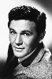

Country:United States, 92 minutes
Spoken languages:
Genres:Crime, Drama
Director(s):Busby Berkeley
Writer(s):Bertram Millhauser, Sig Herzig, Beulah Marie Dix
Video Codec:Unknown
Number: 1753


Certification:NR
Storyline:
A boxer flees, believing he has committed a murder while he was drunk.
Cast: 

Medium: Original DVD,
Comments: Part of: Mystery Classics - 50 Movie Pack
Loaned: No
Aspect ratio: Unknown